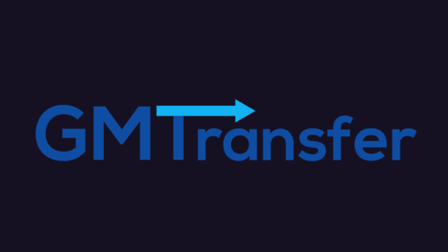

Forager
Technical Producer
The highly popular and quirky "idle game that you want to actively keep playing". Explore, craft, gather & manage resources, find secrets and build your base out of nothing! Buy land to explore and expand!

Fields of Mistria
Production & Marketing
A new life beckons! Begin again on your new farm and befriend the townsfolk as you discover a world brimming with possibilities. Adventure, magic and love all await you in Mistria!

Infinite Guitars
Producer
INFINITE GUITARS is a turn-based rhythm RPG about powering up Mechs with Guitar Solos and fighting in Anime-style Mech Battles!

lazyload
Backend Programmer
A sprite managment tool for GMS2 that allows for automatic importing / updating, alphabetical resource tree sorting, and more.

Smithy of the Fishy
Programmer
A dungeon crawling arcade game completed in 48 hours with @BenStarDev and @FailPositive for the GM48 game jam.


snippy
Backend Programmer
A free tool for GameMaker Studio 2 that allows you to edit the default code snippets for the IDE.

GMTransfer
Programmer
A resource importer to merge files from one project to another in GameMaker Studio 2.
